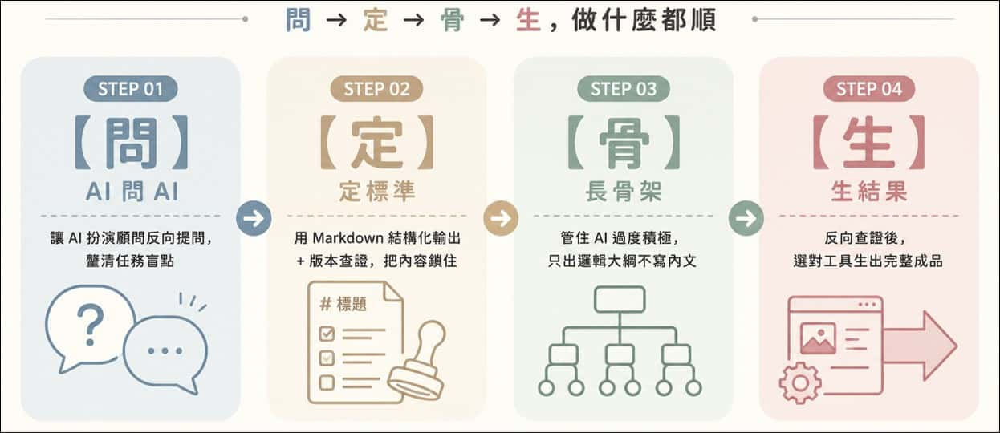

1
AI 協作四步驟
📌 練習主題：咖啡館開店行銷企劃
詢問原則（GPS）
| 字母 | 代表 | 核心提問 |
|---|---|---|
| G | Goal 目標 | 我要達成什麼成效？ |
| P | Position 背景資料 | 我現在的情境、資源、限制是什麼？ |
| S | Shape 成果格式 | 最後要交給我的長什麼樣子？ |

AI 協作四步驟（問定骨生）
| 步驟 | 口訣 | 白話好記 | 核心動作 |
|---|---|---|---|
| 步驟一 | 【問】AI 問 AI | 釐清盲點 | 讓 AI 當顧問反問，把專家盲點和受眾看不懂的鴻溝問出來 |
| 步驟二 | 【定】定標準 | 嚴查規矩 | 用 MD 結構化＋Code Block，把正確的知識文件定死，不讓 AI 瞎編 |
| 步驟三 | 【骨】長骨架 | 排版卡位 | 管住 AI 過度積極，只長邏輯骨架大綱、不寫廢話內文 |
| 步驟四 | 【生】生結果 | 適性生產 | 反向查證後，選對工具，生出可用的最終成品 |

【問】AI 問 AI — 釐清思路（GPS：G目標＋P背景）
AI 幻覺：AI 產生看似合理，但實際上錯誤、不存在或未經查證的內容。先讓 AI 反向提問釐清需求，確保 AI 在「已知的約束條件」下產出，可降低幻覺風險。AI 結果仍需人工確認、數據需核對來源。
📌 S1：Prompt — 釐清思路
我目前的任務是：「撰寫一間新開咖啡館的行銷企劃」。
在你開始動手之前，請先以【資深餐飲品牌顧問】的角色，
對我提出5個問題，協助我釐清這份企劃的目標客群、核心賣點與重點。
請一次提出所有問題，等我回答後再開始。
📌 S2：Prompt — 「結構化的定案資料」，討論匯出MD檔
我們剛才的討論已經完成，請將討論結果整理成一份 MD 檔，作為後續開新對話時的「背景資料」使用。
請依以下結構整理，禁止寫成對話紀錄或流水帳：
1. 任務背景（這份內容是做什麼、給誰看）
2. 角色設定（先前定案的AI角色，沒有則省略此項）
3. 已確認的核心重點（條列，只列我們討論中確定的內容）
4. 尚未決定／待補充的部分（如果有的話）
輸出時請放入 Markdown 程式碼區塊，方便我直接複製存檔。
目的：用於討論結束後整理結論，方便日後開新對話或免費額度用盡時，直接帶入背景接續進度。
【定】定標準 — 產出草稿
定標準的三個關鍵要素：
- 角色設定：告訴 AI 它是誰（決定語氣與專業度）
- 格式鎖定：指定輸出結構（Markdown 標題、表格、條列）
- 邊界聲明：明確禁止（禁止捏造數據、禁止超過字數）
📌 情境1：完全交給 AI 決定架構
根據我們剛才討論的內容，產出正式文件。輸出時遵守以下規範：
# 角色設定
你是一位資深餐飲品牌顧問，擅長社區型咖啡館的定位與開店策略。
# 任務
針對「咖啡館開店行銷企劃」進行規劃。
# 輸出格式
請你依據討論內容，自行判斷最適合的內容架構與章節安排，
每個章節標題需具體、不要用「其他」「補充」這類模糊字眼，以下為例如章節：
## 一、市場定位分析(STP)
## 二、品牌差異化與核心賣點
## 三、開店前置檢查清單(5項)
## 四、首月行銷時程表(表格：階段/任務/負責人/狀態)
# 邊界規範
- 所有內容必須來自剛才的對話，禁止自行補充未討論的內容
- 每點不超過30字
- 禁止捏造具體數據(預算/業績僅寫「待填入」)
➜ 適合：還沒想好怎麼分章節，想先看看 AI 怎麼安排，再決定要不要調整
📌 情境2：先問 AI 建議架構，但不急著生成內容
你是一位資深餐飲品牌顧問，擅長社區型咖啡館的定位與開店策略。
- 根據我們剛才討論的內容，請先不要急著寫草稿。
- 請你先提出2~3種可能的「內容架構」安排方式（列出章節標題即可）
- 簡短說明每種架構的適用情境，等我選定方向後再開始產出文案。
➜ 適合：想要參與架構決策，但不想自己從零開始想，讓 AI 先給選項
【骨】長骨架 — 邏輯骨架校準
▶️ 管住 AI 三招
▶️ 簡報時間與張數參考
| 招式 | 指令關鍵字 | 說明 |
|---|---|---|
| ① 宣告禁令 | 「禁止填充內文」「只出標題與子項目」 | 直接說不要什麼 |
| ② 指定格式 | 「以 Markdown 標題層級輸出」 | 用格式約束輸出範圍 |
| ③ 等待確認 | 「輸出大綱後停止，等我確認後再繼續」 | 讓人控制節奏 |
- 通常 1 分鐘對應 1~1.5 張投影片（一般節奏）
- 5 分鐘報告 → 建議 8-10 張／10 分鐘報告 → 建議 12-15 張
📌 版本一：簡單版（適合一般情形）
現在進入【邏輯骨架校準階段】。
請根據我們剛才完成的「咖啡館開店行銷企劃」報告，
針對【咖啡館投資夥伴與創業顧問】擬定簡報大綱。
規範：
- 規劃約【8】張架構
- 每頁須含主題與核心觀點，禁止跳級產出內文或旁白
- 數據頁面請標註建議採用「便當盒排版法」
- 僅輸出邏輯骨架後停止，等我確認後再繼續
- 強制使用 Markdown code block 區塊輸出
📌 版本二：完整版（對應視覺規格）
# 任務進度：【簡報大綱校準階段】
## 銜接背景與角色設定
- 資料來源：依據我們剛才完成的「咖啡館開店行銷企劃」報告
- AI 角色：資深餐飲品牌顧問，協助將企劃轉化為具說服力的簡報邏輯
- 簡報對象：咖啡館投資夥伴與創業顧問，偏好溫度感、重視可執行性
## 簡報規格參數
- 上台時間：10 分鐘
- 投影片張數：約 8 張
- 輸出格式：以「投影片 [編號]：[標題]」呈現
- 每頁必含：核心論點摘要 + 建議視覺化圖型
## 參、視覺與版面規格
- 整體風格：溫暖質感風（木質紋理感、手寫字體點綴）
- 色系：三色限定
主色：拿鐵棕 #6F4E37
輔色：奶泡白 #F5EFE6
底色：焦糖金 #C8924B
- 視覺質感：無陰影、無漸層、線條手繪感
- 封面設計：強制預留上方 30% 標題空白區
- 內頁排版：複雜數據頁標註「便當盒排版法」或「網格矩陣」
## 強制約束
- 禁止產出具體簡報文案、旁白或生圖指令
- 僅輸出邏輯骨架後停止，等我確認後再繼續
## 格式鎖定
- 強制以 Markdown 程式碼區塊輸出大綱
「報告背景已備齊，請開始擬定簡報邏輯大綱。」
資訊圖 Prompt 生成器網站：https://zoego99.github.io/vizgo/index.html
【生】生結果 — 產出簡報
反向查證（紅隊測試）：請 AI 扮演「主管／顧客／審查單位」進行檢視，提前找出缺漏並補強。
例1：請扮演嚴格的咖啡館加盟顧問，針對這份開店行銷企劃提出3個可能需要改善的問題
例2：請以社區居民角度，檢查這份開店行銷簡報是否有不容易理解或沒有共鳴的地方
例3：請以開店投資夥伴角度，指出這份企劃可能缺少哪些數據或說明
| 輸出類型 | 建議工具 | 指令關鍵字 |
|---|---|---|
| 正式 Word 報告 | Gemini Canvas | 「直接建立 Google 文件」 |
| 簡報投影片 | Gemini Canvas | 「直接建立 Google 簡報，16:9」 |
| 互動式 HTML 簡報 | Gemini Artifacts | 「使用 HTML 與 Tailwind CSS 製作，啟動 Preview」 |
| 知識庫跨文件整合 | NotebookLM | 上傳來源 → 對話查詢 |
📌 簡報型 Prompt
邏輯大綱已確認。直接建立 Google 簡報。
- 內容需填充每張投影片之正式文案
- 聚焦於咖啡館開店初期90天的行銷時程與分工
- 呈現對象：咖啡館投資夥伴與創業顧問
- 產出後請顯示「匯出成簡報」的連結
- 尺寸：16:9
📌 程式碼型 Prompt
邏輯大綱已確認。
使用 HTML 與 Tailwind CSS 程式碼製作數位簡報。
- 視覺風格：溫暖質感品牌風（拿鐵棕 + 奶泡白 + 焦糖金）
- 結構規範：行銷時程採用【便當盒排版】，KPI/數據採用【數字卡片版型】
- 請將結果以程式碼區塊呈現，並同步啟動「預覽 (Preview)」視窗
- 尺寸：16:9
常見 AI 詢問
Q1：如何參考過去文件（照貓畫虎）
📌 詢問 Prompt
# 角色與任務
你是一位專業的行政與文書處理專家。請根據我上傳的參考附檔（前三次的公文/會議紀錄），學習其結構、排版格式、用字語氣與規範，並依據本次的新增內容，生成全新的文件。
# 輸出限制（重要）
- 請直接在對話框中以「文字與 Markdown 格式」完整顯示內容，方便我直接複製貼上。
- 請勿產生任何下載檔案（如 Word、PDF 或 txt 檔），我只需要文字回覆。
# 本次文件基本資訊
- 文件類型：【例如：會議紀錄 / 公告 / 公文】
- 本次會議/事件主題：【請輸入本次的主題】
- 本次執行/會議日期：【請輸入日期】
# 本次會議重點與核心內容
【請在此處貼上或寫下本次會議的實際討論文字、決議事項或口述紀錄，字數不限，越詳細越好】
Q2：如何生成想要的資訊圖
📌 詢問 Prompt
# 任務說明
我上傳了一張參考圖片。我想要製作一張全新主題的「資訊圖表」，請你參考附圖的整體視覺風格、排版邏輯和美感（例如色彩搭配、圖文配比、線條感），來幫我設計這次的新內容。
# 本次製作需求
- 圖表主題：咖啡館開店倒數
- 目標讀者：社區居民與潛在顧客
- 內容與語氣要求：文字要親切、有溫度，多用生活化的小故事或場景描述，避免過度商業化用語
- 圖片尺寸比例：1:1（適合社群貼文）
# 請你提供我以下兩部分內容：
1.【圖表內容規劃】：請幫我把這個主題拆解成適合資訊圖表的文案結構。
2.【視覺畫面建議】：請告訴我這張圖的畫面該怎麼呈現，例如哪裡放插圖、哪裡放重點文字，才能最接近我上傳的參考圖風格。
2
NotebookLM 文件智慧整合應用
📌 練習主題：咖啡館開店行銷企劃 + 顧客問卷300筆
功能介紹
文件摘要與智慧查詢：上傳文件後用自然語言直接提問，NotebookLM 根據上傳內容回答並標示引用來源，不會自行腦補或引用外部資料。
會議錄音整理：先用 Gemini 將錄音轉逐字稿並整理成正式會議記錄格式，再上傳至 NotebookLM 與其他文件放在同一個知識庫，未來可跨會議提問。
Podcast 語音摘要：Audio Overview 功能可將文件自動轉換為兩人對話式摘要，適合通勤學習、簡報內容預先消化。
建立內部知識庫：將常用文件集中上傳，作為輕量型單位知識庫，新進人員可直接提問，不需要一直問老同事。
參考來源上傳
上傳的來源越豐富，NotebookLM 的回答越有依據。建議同時上傳「練習附檔」＋「參考網站」＋「YouTube影片」，讓 AI 可以交叉比對，不要只上傳課程附檔，避免閉門造車。
① 練習附檔（課程提供）
| 檔案 | 說明 |
|---|---|
| 01_成果報告（Doc / MD / PDF） | 咖啡館開店行銷企劃成果，含三大主軸、數據表、改善建議 |
| 02-05 四份會議記錄（docx） | 從第1次籌備到結案檢討，決議事項前後呼應，適合跨文件比對練習 |
| 06 錄音逐字稿（txt） | 口語未整理格式，適合練習逐字稿整理 Prompt |
| 問卷調查300筆（csv / xlsx） | 模擬顧客問卷數據，適合問卷洞察 Prompt 練習 |
② 參考網站（自行新增）
以下為範例格式，網址欄位請自行填入你找到的文章連結。建議選 2-3 篇討論最熱烈或最具代表性的文章貼入 NotebookLM 作為來源。
| 類型 | 建議來源媒體 | 說明 |
|---|---|---|
| 競品分析 | 食尚玩家 / ELLE / 商業周刊 | 分析同類咖啡館的行銷話術與定價策略，找出市場定位空白 |
| 消費者評價 | Dcard / PTT / Google評論 | 讓 AI 讀論壇真實評論，找出消費者痛點與常見雷點 |
| 市場趨勢 | 數位時代 / 經理人月刊 | 提供產業趨勢視角，讓 NotebookLM 具備「市場全局觀」 |
📌 交叉比對 Prompt（上傳網站來源後使用）
根據 Dcard / PTT 網友的討論，消費者在挑選咖啡館時，最在意的3個缺點是什麼？
我的咖啡館開店企劃有避開這些雷點嗎？
請對照我上傳的成果報告，逐一檢查並給出建議。
③ YouTube 影片列表（自行新增）
NotebookLM 支援 YouTube 影片連結作為來源，AI 會讀取字幕內容進行分析。建議選有中文或英文字幕的影片，貼入連結即可。
| 目的 | 用途 |
|---|---|
| 趨勢觀察 | 了解咖啡館、飲食產業近期流行的風格、話題與行銷方式 |
| 競品觀察 | 分析 YouTuber 評論咖啡館時最在意的細節（空間感？出餐速度？服務態度？） |
📌 影片來源分析 Prompt
根據上傳的 YouTube 影片內容，這些評論者在觀察一間咖啡館時，最常提到的正面與負面評價各是什麼？
請整理成兩欄表格，並標注出現頻率（高 / 中 / 低）。
④ 搜尋關鍵字建議
用以下關鍵字在 Google 找文章後，將網址貼入 NotebookLM 作為來源。找 2-3 篇即可，不需要大量上傳。
| 目的 | 建議關鍵字 |
|---|---|
| 找競品現況 | 2025 台灣咖啡館 推薦 / 社區型咖啡館 行銷 / 小咖啡館 開店 成功案例 |
| 找消費者評價 | 咖啡館 推薦 Dcard / 咖啡廳 踩雷 PTT / 咖啡館 等太久 評論 |
| 找行銷靈感 | 咖啡館 IG 文案 / 開店倒數 社群 貼文 / 咖啡廳 品牌故事 |
| 找PDF專業報告 | 台灣 餐飲業 消費趨勢 filetype:pdf |
| 找特定媒體 | 咖啡館 行銷 site:businessweekly.com.tw |
對話練習
📌 成果報告整理
請針對上傳的「咖啡館開店行銷企劃成果報告」，
以【資深餐飲品牌顧問】角色完成以下整理：
1. 用條列方式列出三大工作主軸的核心成果（每項不超過3點）
2. 找出報告中所有出現的數據，整理成一張表格
3. 列出「問題與改善建議」章節提到的所有待辦事項，
並標注責任部門與期限
📌 會議記錄整理
我上傳了四份不同時期的會議記錄（第1次籌備、第2次籌備、開店期間滾動調整、結案檢討）。
請跨文件完成以下分析：
1. 整理四次會議的決議事項清單，標注每項的負責部門與完成期限
2. 找出哪些問題在多次會議中重複出現
3. 哪些初次會議的決議，在後續會議被追蹤到完成？哪些沒有提到後續？
📌 總專案彙整
請將上傳的所有來源文件（成果報告＋四份會議記錄）視為一個完整專案，
進行跨文件總整理：
1. 這個專案從籌備到開幕，時間軸上發生了哪些關鍵事件？
2. 哪個部門在整個專案中被分配到最多任務？
3. 若我是新進的店長，要在3分鐘內掌握這個專案，
最重要的5件事是什麼？請用條列方式說明。
📌 逐字稿整理
這是一份開店結案檢討會議的錄音逐字稿，語氣口語，內容較雜亂。
請協助完成以下整理：
1. 整理成正式會議紀錄格式，包含：
討論事項、各部門意見摘要、決議事項、後續追蹤事項
2. 找出所有店長交辦事項，列出負責人與預計完成時間
3. 整理「問題與改善建議」清單，標注是哪個部門提出的
匯出成品
📌 匯出簡報｜情境1：簡單版
請根據上傳的大綱依md為骨架大綱，製作一份簡報
**視覺風格**：
採用「日系清新風格」風格（插畫敘事）。淡雅柔和，留白優雅，適合生活、健康、親子主題。
- 生活健康感（療癒舒適，平易近人的調性）
- 粉彩淡雅色調
- 簡報主講者png，每頁都有，依簡報內容調整，簡報主講者表情及姿態/情境
📌 匯出簡報｜情境1：結合視覺風格
請根據上傳的「咖啡館開店行銷企劃大綱」，
製作一份簡報草稿，並依照以下視覺規格標注每頁建議風格：
# 角色設定
你是一位資深餐飲品牌顧問兼簡報設計顧問。
# 簡報規格
- 總頁數：8張，不可多不可少
- 尺寸：16:9
# 每頁輸出格式
### 投影片第X張：[標題]
- 視覺風格建議：[從以下擇一]
- 數據頁 → 溫暖質感數據卡片風（拿鐵棕＋數字卡片）
- 流程頁 → 等距視角微縮風格（流程路徑圖）
- 多重並陳頁 → 便當盒排版（大小格混排）
- 封面/結語頁 → 極簡向量插畫風格（三色限定）
- 版面配置：[便當盒/蛇形流程/中心對焦，擇一]
- 核心列點：[3點，每點不超過20字]
- 講師講稿：[100字內，語氣親切專業]
# 注意事項
所有內容必須100%基於上傳的大綱來源，禁止憑空新增資訊。
📌 匯出簡報｜情境2：範例模板
# 角色設定
你是一位專業的餐飲創業顧問，擁有豐富的提案與簡報設計經驗。
# 任務目標
請針對已勾選的來源資料，製作主題為「咖啡館開店行銷企劃」
的簡報大綱與詳細草稿。
# 結構限制
- 總頁數：嚴格限制8張
- 邏輯架構：引言→市場定位→開店前置整備→行銷推廣成效→結論
# 每頁輸出格式（統一Markdown）
### 投影片第X張：[名稱]
- 視覺配置建議：[圖表類型或佈局]
- 核心列點：[3點]
- 講師講稿：[100字內，語氣親切自信]
# 注意事項
所有論點必須基於來源資料，禁止憑空捏造數據。
📌 匯出心智圖
請根據上傳的所有來源文件，產出一份心智圖結構（純文字版）。
格式規範：
- 中心主題：咖啡館開店行銷企劃
- 第一層分支（3～5個）：主要工作主軸或專案階段
- 第二層分支：每個主軸下的關鍵任務或重點
- 第三層分支：具體數據、負責部門或執行細節
📌 匯出資訊圖
請根據上傳的成果報告，整理出適合製作資訊圖的核心內容，
並依照以下格式輸出，讓我可以直接貼入AI生圖工具：
# 資訊圖內容整理
- 主標題（10字內）：
- 副標題（20字內）：
- 核心數據（3～5個關鍵數字，每個附簡短說明）：
- 三大重點訊息（每點15字內）：
# 視覺風格建議
- 應用場景：社群貼文與店內海報
- 建議風格：溫暖質感風（暖棕/奶茶色系）
- 版面配置：便當盒排版（大小格混排）
- 配色方案：三色限定，建議以拿鐵棕、奶泡白、焦糖金為主色
- 簡報母片設定：預留上方30%標題空白區
- 尺寸：1:1（適合社群貼文）
📌 匯出影片／語音摘要
請根據上傳的簡報大綱，製作一份「開店成果語音摘要」。
# 角色設定
主持人A：店長（語氣親切、重視顧客體驗）
主持人B：熟悉現場的吧檯夥伴（語氣活潑、善用具體案例）
# 風格要求
- 對話式進行，兩人交替說明各章節重點
- 主持人B在說明時，適時舉出現場具體情境（例如：尖峰時段如何應對排隊客人）
- 輕鬆但不失專業感
- 總長度：約5分鐘可聽完
# 內容規範
- 開場：點出這次開店企劃的核心價值
- 中段：依三大主軸各用1分鐘說明亮點成果
- 結尾：點出最值得帶走的1個改善建議
問卷調查練習
資料是300筆原始問卷，NotebookLM做這種數據不適合直接要它「算出精確數字」（AI對大量列表做統計容易算錯），所以 Prompt 設計重點是「找趨勢/找族群差異」，精確數字交給 Excel 驗證。
對話練習
📌 整體輪廓掃描
我上傳了一份咖啡館顧客問卷，共300筆。
請以【資深市場研究分析師】角色，幫我整理：
1. 這300位受訪者，年齡區間的分布大致呈現什麼樣的輪廓？
2.「最重視因素」這一題，哪一個選項看起來佔比明顯偏高或偏低？
3. 請只描述「趨勢與輪廓」，不要給出精確百分比數字，
涉及精確計算的部分請提醒我改用Excel驗證
📌 族群交叉觀察
請幫我交叉觀察：「年齡區間」與「最重視因素」之間，
是否有某個年齡層特別偏好某個因素（例如年輕族群特別重視價格、年長族群特別重視環境氛圍）？
請列出你觀察到的3個現象，並說明你是依據哪些列的資料得出這個觀察，
方便我回頭抽樣核對。
📌 異常/極端值觀察
請幫我找出這份問卷裡，「願付一杯精品咖啡價格」明顯偏高或偏低的受訪者，
這群人在「年齡區間」「最重視因素」上是否有共同特徵？
請只描述特徵傾向，不要列出精確人數。
匯出成品
📌 匯出報告
請根據上傳的問卷資料(300筆)，整理成一份「顧客洞察報告」草稿。
# 角色設定
你是一位資深市場研究分析師，擅長將問卷數據轉化為行銷決策建議。
# 輸出格式
## 一、受訪者輪廓概述
## 二、消費行為觀察（頻率/金額/時段）
## 三、最重視因素的族群差異
## 四、對行銷企劃的3點具體建議
# 邊界規範
- 涉及精確數字（人數、百分比）請標注「概估，請以Excel實際統計為準」
- 禁止捏造原始資料中不存在的選項或數值
📌 匯出資料表
請根據上傳的問卷資料，整理出一張適合放入報告的彙整表，
欄位為：分類維度／主要發現／對行銷的意義。
請針對「年齡區間」「常去時段」「最重視因素」三個維度各整理一行，
「主要發現」請用「明顯偏高/偏低/無明顯差異」這類描述性字眼，
不要寫精確百分比。
📌 匯出簡報
# 角色設定
你是一位資深市場研究分析師兼簡報設計顧問。
# 任務目標
請根據上傳的問卷資料(300筆)，製作「顧客洞察」簡報大綱與草稿。
# 簡報規格
- 總頁數：5張
- 尺寸：16:9
# 每頁輸出格式
### 投影片第X張：[標題]
- 視覺風格建議：[數據頁→溫暖質感數字卡片風／其他頁→便當盒排版]
- 核心列點：[3點，每點不超過20字，趨勢性描述優先於精確數字]
- 講師講稿：[100字內]
# 注意事項
精確統計數字請在講稿中註明「需以Excel實際數據核對」
📌 匯出資訊圖表
請根據上傳的問卷資料，整理出適合製作資訊圖表的核心內容，
讓我可以直接貼入AI生圖工具：
# 資訊圖內容整理
- 主標題（10字內）：
- 副標題（20字內）：
- 三大重點觀察（每點15字內，描述趨勢，避免寫精確數字）：
# 視覺風格建議
- 應用場景：社群貼文／店內公告
- 建議風格：溫暖質感風（拿鐵棕／奶泡白）
- 配色：三色限定
- 尺寸：1:1
3
Gamma 簡報製作
📌 練習主題：咖啡館開店行銷企劃簡報
匯入大綱生成簡報
工作流程：用 Gemini / ChatGPT 先產出 Markdown 大綱 → 複製到 Gamma「匯入」功能 → AI 自動配圖排版 → 匯出 PPT 微調。Gamma 免費版每月有額度限制，示範用老師帳號，同學觀看流程即可。
步驟一：先用 AI 產出 Markdown 大綱
📌 Prompt — 產出 Gamma 專用 Markdown 大綱
請根據我們剛才討論的「咖啡館開店行銷企劃」，
產出一份 Gamma 簡報專用的 Markdown 大綱。
規範：
- 總頁數：8頁，每頁一個 ## 標題
- 每頁用 3～5 個 - 條列核心重點，不要寫長篇文章
- 數據頁請直接寫出具體數字（例如：顧客問卷300筆 / 競品8家 / 首月目標380張會員卡）
- 禁止捏造未討論過的數據，未確認的數字寫「待填入」
輸出時請放入 Markdown 程式碼區塊，方便我直接複製貼入 Gamma。
步驟二：貼入 Gamma 生成簡報
操作路徑：Gamma 首頁 → 「新建」→「匯入」→ 貼上 Markdown 文字 → 選擇主題風格 → 生成。建議選「極簡」或「商務」風格，與行銷提案氛圍最搭。
步驟三：Gamma → PPT 匯出後微調
📌 Prompt — 告訴 AI 哪幾頁要修改
Gamma 幫我生成的簡報已匯出成 PPT，有幾頁需要調整：
第3頁的圖表建議改成「直條圖」呈現競品比較
第5頁的文字太多，請幫我精簡成每點不超過15字
第7頁需要加入一個「行動呼籲」按鈕設計建議
請給我每頁的修改建議，我再自行在 PPT 中操作。
簡報 Prompt 範本
📌 完整版簡報生成 Prompt（直接交給 AI 填充）
請根據上傳的「咖啡館開店行銷企劃大綱」，製作一份完整簡報草稿：
# 角色設定
你是一位資深餐飲品牌顧問兼簡報設計師。
# 簡報規格
- 總頁數：8張，不可多不可少
- 尺寸：16:9
- 視覺色系：暖棕色系（拿鐵棕 #6F4E37、奶泡白 #F5EFE6、焦糖金 #C8924B）
# 每頁輸出格式
### 投影片第X張：[標題]
- 版面配置：[便當盒 / 蛇形流程 / 中心對焦，擇一]
- 核心列點：[3點，每點不超過20字]
- 口說講稿：[80字內]
# 注意事項
所有內容必須基於上傳的大綱來源，禁止憑空新增資訊。
課程統一 範本
📌 咖啡館開店行銷企劃 範本
# 咖啡館開店行銷企劃
## 第1頁｜封面：咖啡館開店行銷提案
1. **專案名稱**：豆芽咖啡 2026 年度開店行銷計畫
2. **提案單位**：品牌行銷部
3. **提案人**：專案負責人
4. **主題語句**：「每一杯都有溫度，每個角落都是放鬆的理由。」
5. **視覺要求**：拿鐵棕與奶泡白交織，營造溫暖、社區感的品牌氛圍。
## 第2頁｜品牌定位與目標客群
1. **市場定位**：填補社區型「溫度感咖啡館」市場空白，主打輕奢不貴、有故事感的品牌路線。
2. **目標客群**：25-44 歲，上班族晨間外帶族、週末親子久坐族為主力。
3. **競品調查**：完成周邊 3 公里 8 家競品分析，選定捷運站步行 3 分鐘社區街角店面。
4. **品牌核心價值**：溫暖、社區感、手作質感、每日新鮮烘焙。
5. **差異化優勢**：比連鎖咖啡館更有溫度，比精品咖啡館更親民。
## 第3頁｜開店前置整備
1. **空間規劃**：座位數 28 席（含戶外 4 席），吧檯動線以「晨間外帶尖峰」為核心設計。
2. **供應商議價**：咖啡豆、牛奶、烘焙食材共 4 家供應商已完成簽約。
3. **人力招募**：正職 2 名、兼職 3 名，優先招募具吧檯實作經驗者。
4. **顧客問卷洞察**：300 筆問卷顯示 25-34 歲客群最重視口味與環境氛圍。
5. **定價策略**：主力商品定價 120-150 元，平均客單價目標 130 元。
## 第4頁｜首月行銷執行策略
1. **社群預熱**：開幕前 4 週啟動 IG/FB 帳號，「開幕倒數」系列貼文累積追蹤。
2. **開幕活動**：首週買一送一，會員卡首刷禮，目標首月發卡 300 張以上。
3. **口碑行銷**：邀請 3-5 位在地美食部落客進行開幕前試喝，製造社群聲量。
4. **問卷轉文案**：問卷洞察結果直接轉化為「社群開店倒數貼文」內容主題。
5. **KPI 設定**：首月進店 1,000 人次、社群追蹤數破千、回購率達 35%。
## 第5頁｜成果預期與未來展望
1. **首季目標**：會員卡發放 380 張，回購率 42%，高於原訂目標 35%。
2. **品牌延伸**：建立店內限定周邊商品（手提袋、杯套），提升品牌黏著度。
3. **展店計畫**：首店成功後，複製 SOP 模板，評估第二點展店可行性。
4. **季度檢視**：每季檢視菜單結構與社群數據，依回饋調整行銷策略。
5. **總結陳述**：請主管支持本案，讓豆芽咖啡成為這個社區最有溫度的日常據點。
📌 寵物商品行銷企劃 範本
# 寵物商品行銷企劃
## 第1頁｜封面：寵物商品行銷提案
1. **專案名稱**：毛孩好日子 2026 年度新品上市行銷計畫
2. **提案單位**：品牌行銷部
3. **提案人**：專案負責人
4. **主題語句**：「每一口都是愛，每個毛孩都值得最好的。」
5. **視覺要求**：暖橘與奶茶色調交織，以寵物店長貓 IP 角色為主視覺，溫馨可愛氛圍。
## 第2頁｜品牌定位與目標客群
1. **市場定位**：主打「成分安心、萌系包裝、飼主放心買」的寵物零食中高價位市場。
2. **目標客群**：25-40 歲都會飼主，重視寵物健康、具消費能力、活躍於社群平台。
3. **競品調查**：完成市售主要競品分析 6 款，鎖定「天然成分、無添加防腐劑」作為差異化切入點。
4. **品牌核心價值**：安心、天然、萌趣、飼主與毛孩的共好生活。
5. **差異化優勢**：比大型連鎖寵物店更有品牌溫度，比進口品牌更貼近台灣飼主需求。
## 第3頁｜商品上市前置整備
1. **IP 角色設定**：建立「店長貓」品牌吉祥物，統一貫穿商品包裝、社群貼文、貼圖設計。
2. **商品規格確認**：寵物零食系列共 3 款口味，成分通過獸醫師審核，適口性測試完成。
3. **通路議價**：線上（蝦皮、PChome）＋線下（獨立寵物店）雙通路同步上架計畫。
4. **電商頁設計**：完成商品詳情頁 6 張圖設計（主圖、成分、情境、顧客見證、比較表、CTA）。
5. **定價策略**：單包建議售價 280-380 元，訂閱方案可享 85 折，培養回購黏著度。
## 第4頁｜首月行銷執行策略
1. **社群預熱**：上市前 3 週以「店長貓日記」系列短影音開始預熱，累積 IG/FB 追蹤。
2. **開賣活動**：首週限定開賣優惠，買 2 包送限定店長貓貼圖包，強化購買動機。
3. **KOL 合作**：邀請 3-5 位寵物 YouTuber 或 IG 飼主進行開箱試吃，製造真實口碑。
4. **LINE 貼圖上架**：同步上架店長貓 LINE 貼圖，以免費貼圖換取品牌曝光與流量回流。
5. **KPI 設定**：首月電商訂單達 500 筆、社群追蹤數破 2,000、回購率達 30%。
## 第5頁｜成果預期與未來展望
1. **首季目標**：電商回購率達 35%，LINE 貼圖下載突破 1,000 次，品牌認知度有效提升。
2. **品牌延伸**：以店長貓 IP 延伸開發第二季貼圖、聯名周邊（毛巾、飼料碗貼紙）。
3. **通路拓展**：首款成功後，評估進入量販通路（全聯、家樂福寵物區）可行性。
4. **季度檢視**：每季檢視口味銷售佔比與顧客評論，依回饋調整配方或推出新口味。
5. **總結陳述**：請主管支持本案，讓毛孩好日子成為台灣飼主最信賴的寵物零食品牌。
4
Canva 海報與社群
📌 練習主題：咖啡館開店倒數 / 寵物商品宣傳海報
快速鍵
▶️ 物件操作
| 功能 | Windows | Mac | 功能 | Windows | Mac |
|---|---|---|---|---|---|
| 複製物件 | Ctrl + C | Cmd + C | 上一層 | Ctrl + ] | Cmd + ] |
| 貼上物件 | Ctrl + V | Cmd + V | 下一層 | Ctrl + [ | Cmd + [ |
| 群組 | Ctrl + G | Cmd + G | 最上層 | Ctrl + Shift + ] | Cmd + Shift + ] |
| 取消群組 | Ctrl + Shift + G | Cmd + Shift + G | 最底層 | Ctrl + Shift + [ | Cmd + Shift + [ |
▶️ 對齊與移動
| 功能 | Windows / Mac |
|---|---|
| 精準移動 1px | 方向鍵 ←↑↓→ |
| 快速移動 10px | Shift + 方向鍵 |
▶️ 編輯 / 頁面
| 功能 | Windows | Mac | 功能 | Windows | Mac |
|---|---|---|---|---|---|
| 新增頁面 | Ctrl + Enter | Cmd + Enter | 回到 100% | Ctrl + 0 | Cmd + 0 |
| 放大畫布 | Ctrl + + | Cmd + + | 復原 Undo | Ctrl + Z | Cmd + Z |
| 縮小畫布 | Ctrl + - | Cmd + - | 重做 Redo | Ctrl + Shift + Z | Cmd + Shift + Z |
元素搜尋關鍵字
空格（space）= OR（或）；＋（加號）= AND（而且）
| 類型 | 關鍵字 |
|---|---|
| 影片常用字幕條 | lower third / news lower third / name plate / subtitle bar / ticker |
| 影片特效 | glitch animation / neon effect / motion graphic / lens flare / transition |
| 可愛 / 咖啡館 / 療癒風 | doodle / hand drawn / kawaii / cute elements / coffee icon / coffee doodle / pastel badge |
| 寵物風 | paw print / pet icon / cute animal / kawaii cat / dog doodle / pet badge |
| 裝飾線條與小物件 | divider line / sparkle / starburst / arrow hand drawn / gradient swoosh / wave line |
| 教學影片符號 | highlight circle / marker stroke / step badge / numbered label / pointer arrow / check mark badge |
AI 文案生成
📌 Prompt — 咖啡館開店倒數海報文案
你是一位「餐飲品牌」文案顧問，
擅長為【社區型咖啡館：豆芽咖啡】撰寫溫暖、有記憶點的海報文案。
請依照以下活動資訊，產出「海報文案專用格式」：
1. 主標題（簡短、吸睛、有溫度感）
2. 短標語（6～12字，親切、生活感）
3. 活動簡介（2～3行，強調社區感與開店故事）
4. 活動資訊（開幕日期／地點）
另外提供 5 組「主標題＋短標語」，風格各異。
【活動資訊】
- 活動名稱：豆芽咖啡 正式開幕
- 開幕日期：【請填入日期】
- 地點：【請填入地址】
- 氛圍：溫暖、社區感、手作質感、奶茶色系
【輸出限制】
- 僅輸出海報文案，段落清楚，方便直接貼到 Canva
- 不要加入說明或延伸內容
📌 Prompt — 寵物商品社群貼文文案
你是一位寵物商品品牌文案顧問，
請幫我為「寵物零食新品上市」撰寫 IG/FB 社群貼文文案。
請提供 3 則貼文，分別用以下三個角度切入：
1. 「店長貓出場」——由寵物IP角色口吻說話，介紹新品
2. 「飼主證言」——以飼主角度分享使用心得，強調安心感
3. 「限時優惠」——製造緊迫感，附上行動呼籲（CTA）
每則貼文：100字以內，含 2～3 個適合的 emoji，段落清楚，方便直接貼到 Canva 圖片說明欄